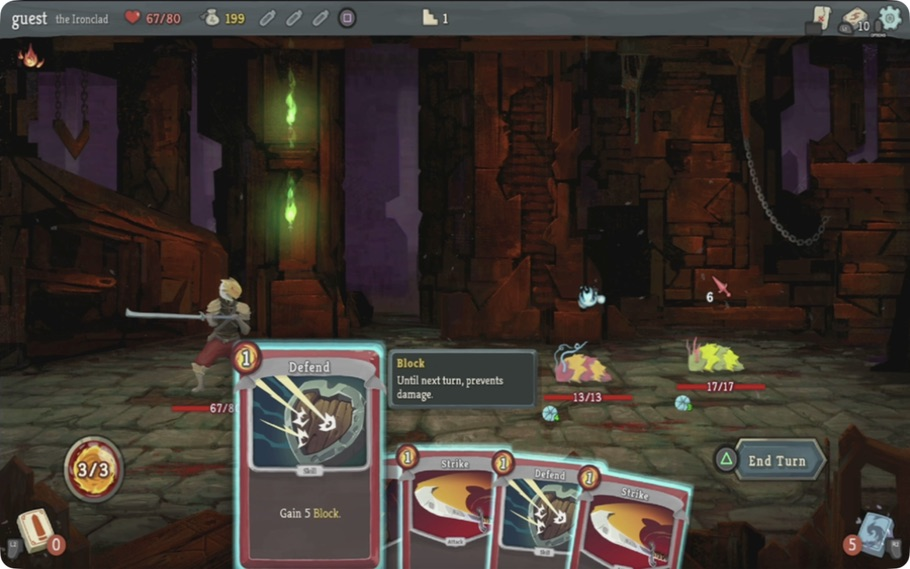
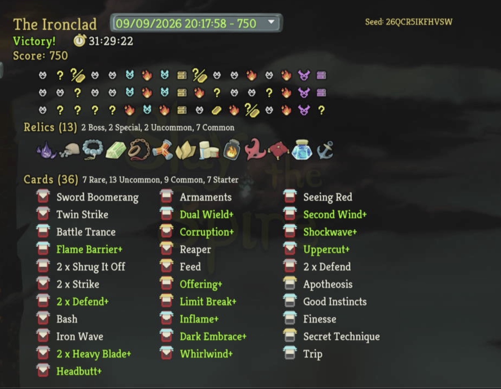
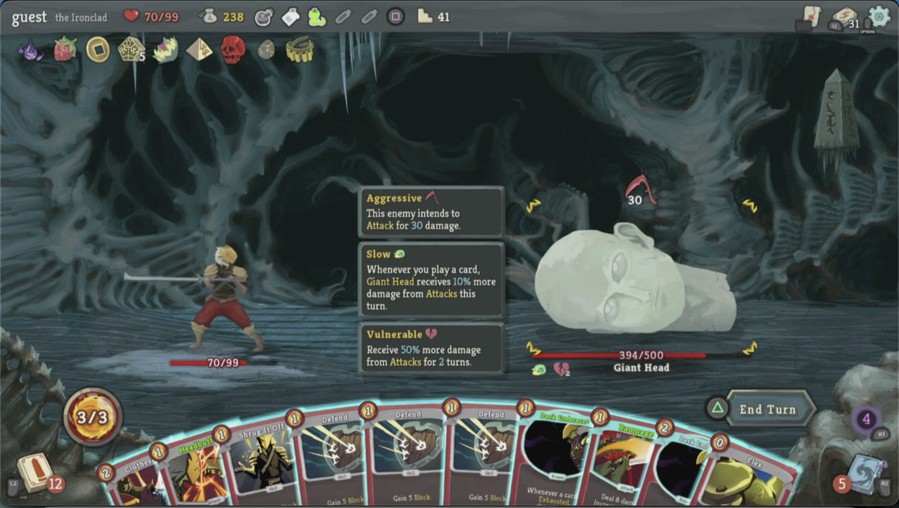

Act 1 complete
Floor 16 records a Slime Boss victory and its reward state.
Slay the Spire · completed run
A floor-by-floor record of confirmed milestones, observed state, and limits. Missing floors are not filled from memory.


Historic trophy
Ironclad victory · score 75013 relics · 36 cards. This trophy is a separate historic verified completion, shown below the hero as context—not as the latest Ascension 1 result.
Scorecard
Each floor below has its own record. If a floor has no outcome, the card says so.
Floor 16 records a Slime Boss victory and its reward state.
Floor 33 records a Bronze Automaton victory and its rewards.
Time Eater defeated on Floor 50; final results verified on Floor 51. No Heart combat victory is claimed.
Completed Ascension 1 run
Reviewed snapshot of the completed local run. Missing outcomes remain marked; private screenshots containing desktop content are not published.
Score 802; 51 floors climbed, 18 enemies and three bosses slain. Final HP 74/74, gold 112.
Final-results screen verified; no Heart combat victory.
Boss defeated. Energy Potion and Blood Potion consumed; Fairy in a Bottle remained unused.
The final outcome is confirmed; intermediate turns are incomplete in the structured ledger.
Barricade upgraded to Barricade+; its energy cost changed from 3 to 2. HP 74/74.
Upgrade confirmed before the boss; combat-only upgrades are kept separate from the permanent deck.
Victory at 61/74 HP; 27 gold, Red Skull and Blood Potion collected.
Confirmed reward and outcome records; no invented card reward.
What I did: Logged the elite opening at 74/74 HP, 4 gold, and three potions.
What I accomplished: No closing state or reward is recorded.
What I learned: No info available.
What I did: Logged one resolved purchase sequence at 257 gold and 74/74 HP.
What I accomplished: Feel No Pain, True Grit, Fairy in a Bottle, and Strength Potion recorded; Liquid Bronze removed.
What I learned: Full potion slots can block a shop potion until a potion is manually discarded.
What I did: Logged 12 combat decisions, including Corruption, free defensive Skills, and focused attacks on the active Darkling.
What I accomplished: Darklings combat victory recorded; Headbutt+ acquired.
What I learned: Debuff the group, exploit Corruption’s free Skills, and avoid isolating a Darkling before the revive cycle is managed.
What I did: Chose “I Am War,” then recorded 16 decisions through the Mind Bloom Slime Boss fight and reward.
What I accomplished: Shovel, 50 gold, and Body Slam (upgrade not confirmed) were recorded; the combat victory was observed, but final HP was not closed.
What I learned: At 47 HP, the evidence-supported event choice favored the fight over adding two Normality curses; Body Slam (upgrade not confirmed) fit the block engine.
What I did: Logged six decisions around the visible 15-damage intent, Defend+ mitigation, Blood for Blood+, and the final lethal sequence.
What I accomplished: Nemesis elite victory, 20 gold, and Armaments+ recorded; HP ended at 47/74 in the resolved outcome.
What I learned: Defend before committing damage against an unread Nemesis status; Armaments+ was preferred because Runic Pyramid retains upgrade targets.
What I did: Logged 14 decisions through the three-Darklings fight and reward choice.
What I accomplished: Combat victory at 46/74 HP; 20 gold, Power Potion, and Shockwave+ recorded.
What I learned: Shockwave+ was selected for immediate multi-enemy safety; a strength payoff was not confirmed, so Spot Weakness+ stayed unchosen.
What I did: Inspected the visible relic options and logged two decisions rather than guessing at unread effects.
What I accomplished: Act 3 boundary at 74/74 HP; Runic Pyramid selection was player-confirmed.
What I learned: Unread relic text must be inspected before comparing options; unknown effects stay unknown.
What I did: Defeated the Act 2 boss after 28 logged decisions, then confirmed the next Act boundary.
What I accomplished: Entered Act 3 at 74/74 HP; Corruption, Liquid Bronze, and Runic Pyramid recorded.
What I learned: Keep the retained-hand plan explicit when choosing a boss relic; the final relic choice was confirmed as Runic Pyramid.
What I did: Logged 10 resolved combat decisions, including Weak, Shrug It Off+, and the final damage line against Mystic.
What I accomplished: Multi-enemy victory at 45/74 HP; 52 gold, Strength Potion, and Shockwave recorded.
What I learned: Apply Weak and use block deliberately against the active attacker; Feed lethality still requires exact displayed HP.
What I did: Logged 12 decisions and finished the lethal sequence with Blood for Blood, Headbutt, and Strike before the final Blood for Blood hit.
What I accomplished: Snake Plant defeated; HP 54/74 → 51/74 after Burning Blood, 14 gold recorded, card reward unopened.
What I learned: Malleable and the 7×3 intent require a damage-versus-block calculation; a zero-cost Blood for Blood closed the final 4 HP.
What I did: Chose Simplicity from the two visible Ancient Writing options.
What I accomplished: All Strikes and Defends upgraded; HP remained 54/74.
What I learned: No decision record was written for this event; the outcome is confirmed but the rationale is not.
What I did: Entered the shop at 513 gold and 35/74 HP; inventory events record Vajra, Medical Kit, Barricade, Blood Potion, and a card-form Barricade.
What I accomplished: The final purchase order and exact shop screen are not fully recorded.
What I learned: Shop telemetry must distinguish relic/card names and record each purchase or removal as it occurs.
What I did: Opened the treasure room from the visible map state.
What I accomplished: Eternal Feather acquired; HP 35/74 and gold 513 recorded.
What I learned: No decision record was written for the chest; contents are confirmed only by the persisted ending state.
What I did: Used the rest site after the Triple Slavers fight.
What I accomplished: Healed from 13/74 to 35/74 HP; gold 438.
What I learned: No decision record was written, but the persisted state confirms healing rather than an upgrade.
What I did: Completed the elite record and reached the reward state.
What I accomplished: Finished at 13/74 HP; Pantograph, 28 gold, and an unopened card reward recorded.
What I learned: The accompanying retrospective warns against lethal claims without exact enemy HP, Block, intent, and post-action HP.
What I did: Used the rest site after the Snecko combat.
What I accomplished: Healed from 33/74 to 55/74 HP; gold 403. Liquid Bronze removal is recorded, but its reason is not.
What I learned: Resource changes need an explicit reason alongside the item event.
What I did: Logged five resolved decisions through the Snecko fight, reward, and card skip.
What I accomplished: Snecko defeated; 14 gold collected, card reward skipped, and Burning Blood restored HP to 33/74.
What I learned: When the actual card offers were visible, the reward was skipped rather than adding Entrench, Wild Strike, or a redundant Clothesline.
What I did: Opened mid-combat at 30/74 HP with Shelled Parasite at 14/72 HP and 6 Block; three decisions were logged.
What I accomplished: Combat outcome is marked victory; 13 gold, Fear Potion, and card offers Disarm, Combust, and Second Wind were observed, but the floor close is absent.
What I learned: Mid-combat starts must stay partial until the earlier turn sequence and closing state are captured.
What I did: Logged the opening hand, energy 3, Mystic at 20 HP/40 Block, Spheric Guardian at 39 HP, and six decisions.
What I accomplished: No closing state is recorded; Bloodletting+ and Liquid Bronze were acquired and Duplication Potion was consumed.
What I learned: Do not promote a combat outcome when the closing state is absent; the zone-sensitive sequence remains unverified.
What I did: Logged 12 decisions across the connected route and elite combat; the visible continuation was chosen after weighing the shop path.
What I accomplished: Three Slavers defeated; HP 70/74 → 65/74, 30 Gold Stolen Back plus 18 gold, Duplication Potion, and Armaments+ recorded.
What I learned: Stop and reassess after Offering or a new draw; the priority target and the remaining block line must be explicit.
What I did: Reached the Act 2 chest at 13/74 HP and 342 gold before opening it.
What I accomplished: No info available; chest contents and subsequent choice were not recorded.
What I learned: A safe-boundary screenshot without the opened chest cannot establish a reward.
What I did: Logged three recommended combat lines against the 140-HP Slime Boss, including the split-threshold damage line.
What I accomplished: Boss defeated at 13/74 HP; Offering, Liquid Bronze, and the boss-relic options were recorded, with the final relic choice unresolved in this floor record.
What I learned: A visible non-damage intent does not remove the need to verify the next turn before committing to a split-race line.
What I did: Used the rest site before the Act 1 boss.
What I accomplished: HP recorded at 50/74 with 216 gold; boss next confirmed.
What I learned: The safe pre-boss boundary is confirmed, but no decision rationale was recorded.
What I did: Chose Forge at the Ominous Forge and upgraded Shrug It Off.
What I accomplished: Shrug It Off upgraded; no curse added and gold stayed at 216.
What I learned: At 28/74 HP, the resolved record favors a known defensive upgrade over an unknown relic plus Pain.
What I did: Searched the Dead Adventurer event, continued after the first reward, and logged 11 decisions through the sleeping elite fight.
What I accomplished: Elite victory; HP 60/74 → 28/74, Orichalcum and Shrug It Off acquired, gold 153 → 216.
What I learned: A calculated event risk can be acceptable at 60/74 HP, but the extra fight materially reduced the run’s health buffer.
What I did: Reached the rest-site boundary with 153 gold and Blessing of the Forge visible.
What I accomplished: The persisted screen shows 60/74 HP; the floor summary records a completed rest.
What I learned: No decision record was written for the rest, so the choice cannot be reconstructed beyond the observed state.
What I did: Logged six recommendations, including visible Defend/Iron Wave/Strike lines and a discard check before Headbutt.
What I accomplished: Combat victory; HP 36/74 → 38/74, gold 138 → 153, and Inflame acquired.
What I learned: Headbutt targets must come from confirmed discard choices; the final Inflame reward was player-confirmed.
Separate archive record
This floor is kept separate from the completed Ascension 1 run.

Earlier Ascension 1 archive record: entered at 76/99 HP, fled using Smoke Bomb at 12/99 HP, and ended at 30/99 HP. Elite reward was forfeited.
Photo: floor-specific archive evidence.